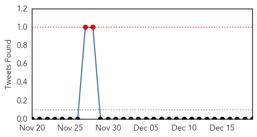
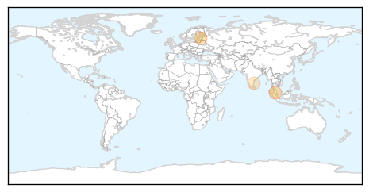
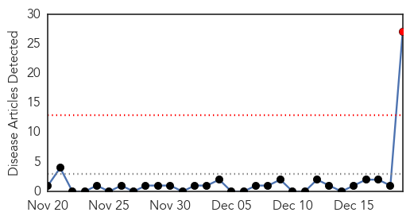
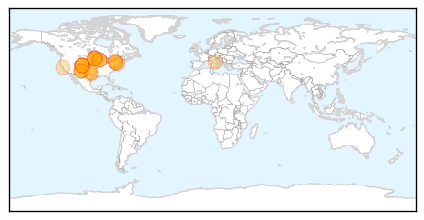

Dengue Fever
30-Day Web Trend
0 alerts, 0 warnings

30-Day Twitter Trend
0 alerts, 0 warnings

Article Locations
Article Confidences

Top Articles:
Top Tweets:
-
No tweets found for Dec 19, 2014
Meningitis
30-Day Web Trend
1 alerts, 0 warnings

30-Day Twitter Trend
1 alerts, 0 warnings

Article Locations
Article Confidences

Top Articles:
- 0.981
- Caramel Coated Apples are the Prime Suspect in Five Deaths and the Latest Listeria Outbreak in 10 States
- 0.981
- CDC Warns of Listeria Danger From Caramel Apples
- 0.981
- Caramel Apples Linked to Deadly Listeria Outbreak, CDC Says
- 0.963
- Apples Coated in Caramel Linked to Listeria Deaths
- 0.960
- CDC warns against prepackaged caramel apples linked to listeria deaths
- 0.958
- Caramel Apples Linked to Four Deaths in Multi-State Listeria Outbreak
- 0.934
- Texas Death Among 5 Reported in Listeria Outbreak
- 0.929
- Utah has at least 1 listeria case in 10-state outbreak
- 0.923
- CDC: 5 Deaths, 28 Illnesses in Multi-State Listeria Outbreak Linked to Caramel Apples
- 0.919
- Prepackaged caramel apples linked to 4 deaths
- 0.915
- Caramel Apples May Not Be So Sweet—Listeria Outbreak Across US
- 0.915
- Prepackaged caramel apples linked to 4 deaths
- 0.913
- Prepackaged caramel apples linked to four deaths
- 0.912
- Listeria outbreak from caramel apples has killed four
- 0.909
- Prepackaged caramel apples linked to 4 deaths; Utah among states where illnesses have occurred
- 0.906
- Pre-Packaged Caramel Apples Linked To 5 Deaths
- 0.906
- Contaminated caramel apples linked to four deaths, dozens of illnesses in 10 states
- 0.905
- Pre-Packaged Caramel Apples Linked To 4 Deaths « CBS Minnesota
- 0.905
- Caramel apples linked to listeria outbreak; CDC warns consumers not to eat them
- 0.898
- Prepackaged caramel apples linked to four deaths
- 0.890
- Prepackaged Caramel Apples Linked to 4 Deaths
- 0.875
- Prepackaged Caramel Apples Linked to 4 Deaths
- 0.868
- UPDATE: Prepackaged caramel apples linked to 4 deaths
- 0.868
- Five Die From Listeria Linked To Caramel Apples
- 0.778
- Bacteria in caramel apples kills at least 4 in US
- 0.685
- Toddler finds solace with polio victims as mystery lurks
- 0.524
- Prepackaged caramel apples linked to illnesses in Wash.
Top Tweets:
-
No tweets found for Dec 19, 2014